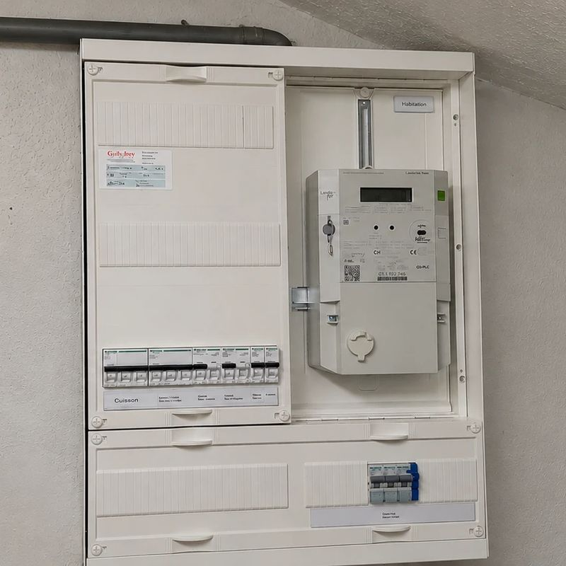
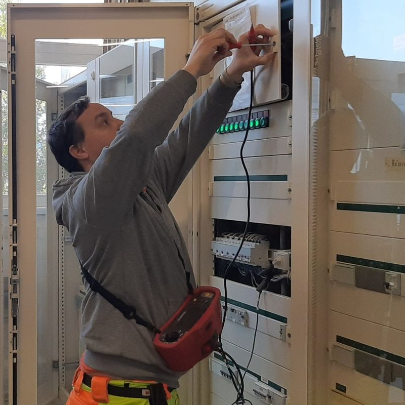
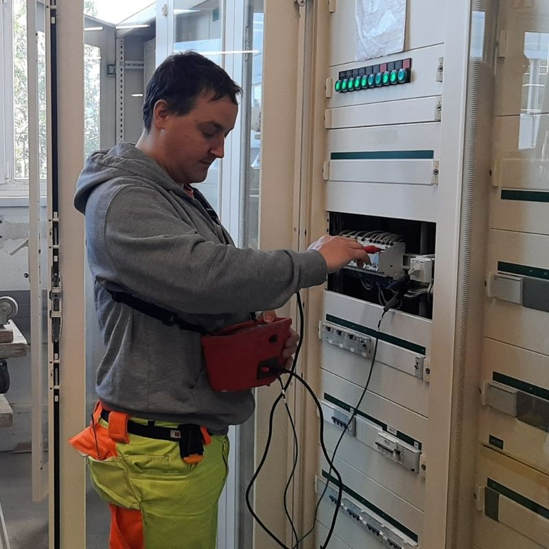
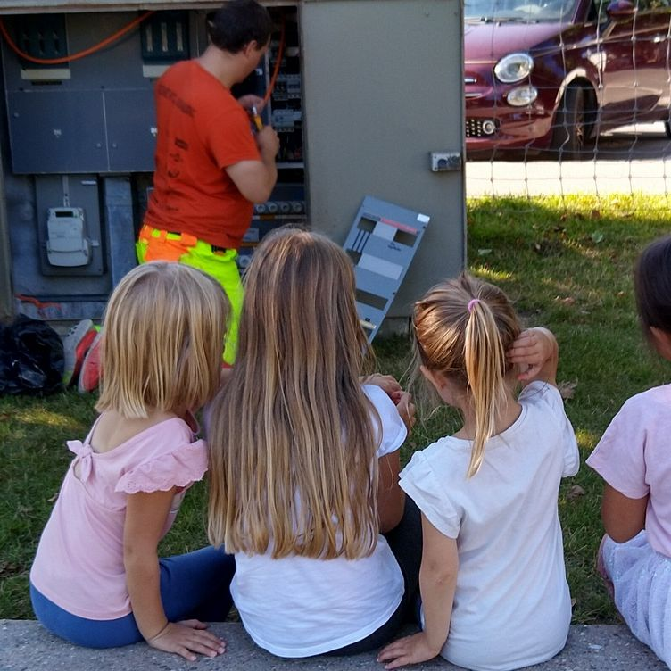
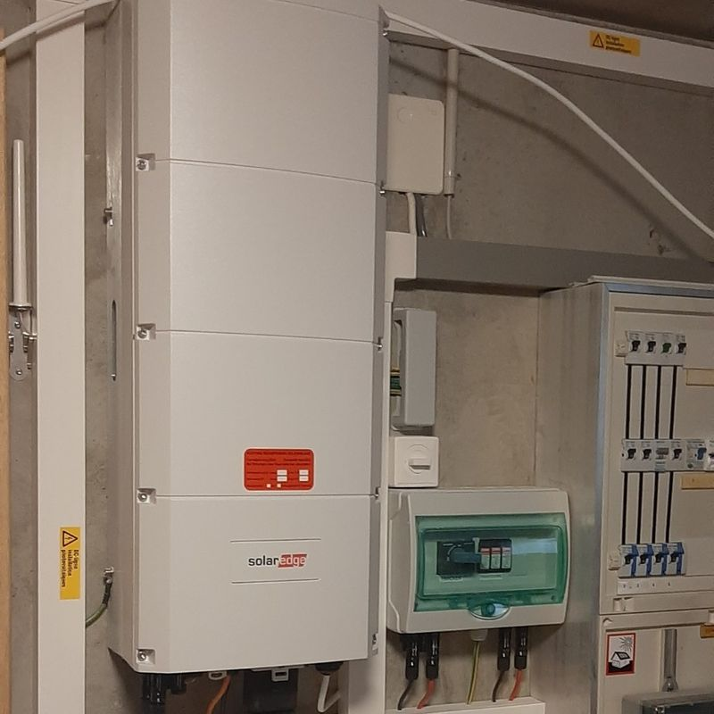
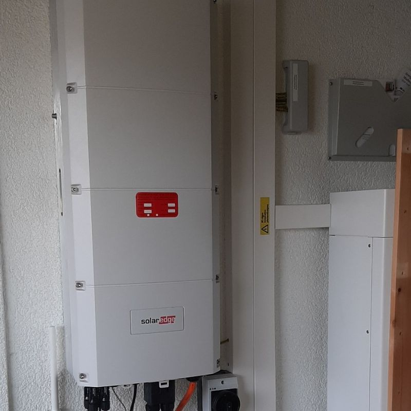

Tableaux, contrôles OIBT, éclairage et raccordements : un aperçu de chantiers réellement exécutés dans la région d'Échallens.

Tableau neuf
Intervention au tableau
Mesures au tableau Contrôle au multimètre
Contrôle au multimètre Mesure de sécurité
Mesure de sécurité Mesure de continuité
Mesure de continuité Éclairage extérieur (nacelle)
Éclairage extérieur (nacelle)
Armoire extérieure
Raccordement au tableau
Raccordement sous goulotte Colonne de compteurs
Colonne de compteursPhotos de chantiers Gottofrey. D'autres réalisations sont visibles sur la page Facebook de l'entreprise.
Derrière chaque photo, un type d'intervention précis. Voici ce qui se joue concrètement sur ces installations.
Le tableau électrique répartit le courant dans tout le bâtiment et porte les protections qui coupent en cas de défaut. Les chantiers présentés ici vont du remplacement complet d'un tableau vétuste à l'ajout de circuits sur une installation existante. Sur les bâtiments anciens du Gros-de-Vaud, il reste fréquent de trouver des tableaux à fusibles à vis, sans disjoncteur différentiel : c'est le premier point relevé lors d'un contrôle, parce que le différentiel est ce qui protège les personnes contre l'électrisation.
Un remplacement de tableau demande de repérer chaque départ, d'identifier les circuits, puis de recâbler proprement avec un repérage lisible. Le soin apporté au câblage n'est pas cosmétique : un tableau clair, c'est un dépannage plus rapide et moins cher pour les années suivantes.
L'OIBT (ordonnance fédérale sur les installations à basse tension) impose un contrôle périodique de toute installation électrique. Pour un logement, la périodicité usuelle est de vingt ans ; elle est plus courte pour les locaux commerciaux ou industriels selon leur usage. Le contrôle donne lieu à un rapport de sécurité remis au gestionnaire du réseau de distribution.
Les photos de cette catégorie montrent la phase de mesure : contrôle de la continuité des conducteurs de protection, mesure d'isolement, vérification du déclenchement des différentiels. Ce sont des mesures instrumentées, pas un examen visuel — c'est précisément ce qui distingue un contrôle conforme d'un simple coup d'œil. Un contrôle est également demandé lors d'une vente immobilière ou d'un changement de propriétaire, quand le dernier rapport est trop ancien.
Éclairage extérieur posé à la nacelle, armoires extérieures, colonnes de compteurs, raccordements au tableau : ce sont les interventions du quotidien, souvent les plus utiles. Elles représentent l'essentiel du travail d'un électricien de proximité — des chantiers courts, exécutés vite et proprement, pour des particuliers, des gérances ou des communes de la région d'Échallens.
Devis gratuit et sans engagement, partout dans le Gros-de-Vaud.